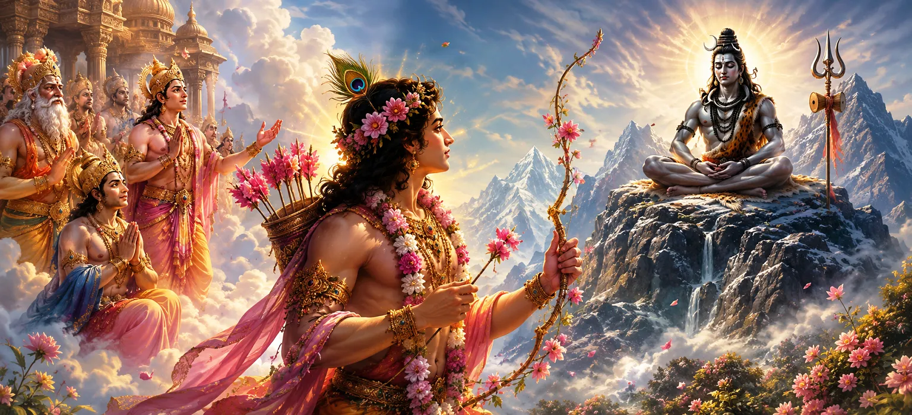

जैसे-जैसे देवी सती की भगवान शिव के प्रति भक्ति गहरी होती गई, देवताओं को एक बड़ी ब्रह्मांडीय चुनौती का एहसास होने लगा। भगवान शिव गहन ध्यान में लीन रहे, सभी सांसारिक चिंताओं से अलग रहे और स्वर्ग और पृथ्वी के मामलों से अप्रभावित रहे। फिर भी सृष्टि का कल्याण शिव और शक्ति के दिव्य मिलन पर निर्भर था। इसलिए दिव्य प्राणियों ने इस पवित्र नियति को पूरा करने का रास्ता खोजना शुरू कर दिया।
इस महत्वपूर्ण क्षण में, ध्यान इच्छा के देवता काम की ओर गया, जिसका प्रभाव देवताओं और दिव्य प्राणियों के दिलों में भी प्रेम और आकर्षण जगा सकता था। काम की उपस्थिति ने शिव और सती की दिव्य कहानी में एक महत्वपूर्ण अध्याय की शुरुआत को चिह्नित किया। इसके बाद जो होगा वह साहस, भक्ति और भाग्य का परीक्षण करेगा, अंततः दिव्य इच्छा की अप्रतिरोध्य शक्ति को प्रकट करेगा।
देवताओं ने समझा कि सृष्टि का संतुलन भगवान शिव और देवी सती के भविष्य के मिलन पर निर्भर है। फिर भी शिव सांसारिक मामलों से पूरी तरह अलग होकर कैलास पर्वत पर ध्यान में मग्न रहे। जैसे-जैसे समय बीतता गया, दिव्य प्राणी चिंतित होते गए, क्योंकि ब्रह्मांडीय सद्भाव के लिए आवश्यक भविष्य की कई घटनाएं इस पवित्र मिलन पर निर्भर थीं।
इस बढ़ती चिंता को दूर करने के लिए, देवता एक दिव्य सभा में एकत्र हुए। महान संतों, दिव्य शासकों और स्वर्गीय प्राणियों ने चर्चा की कि ब्रह्मांडीय योजना कैसे पूरी की जा सकती है। हालाँकि सभी लोग भगवान शिव का आदर करते थे, लेकिन किसी ने भी बिना किसी उच्च उद्देश्य के उनके ध्यान में खलल डालने की हिम्मत नहीं की। इसलिए सभा ने एक ऐसा समाधान खोजा जो ईश्वरीय इच्छा के अनुरूप हो।
सभी दैवीय शक्तियों के बीच, काम के पास एक अद्वितीय शक्ति थी। वह प्राणियों के हृदय में आकर्षण, स्नेह और लालसा जगा सकता था। उनका प्रभाव स्वर्ग, पृथ्वी और दिव्य लोकों तक फैला हुआ था। यहाँ तक कि शक्तिशाली राजा और स्वर्गीय प्राणी भी आसानी से इच्छा की उस सूक्ष्म शक्ति से बच नहीं सकते थे जो काम ने अपने पुष्प-नुकीले तीरों के भीतर ले रखी थी।
सावधानीपूर्वक विचार-विमर्श के बाद, देवताओं ने निर्णय लिया कि अकेले काम में ही उनके पवित्र मिशन में सहायता करने की क्षमता है। दूत भेजे गए, और इच्छा का देवता दिव्य सभा के सामने प्रकट हुआ। यद्यपि निमंत्रण से सम्मानित होकर, काम ने समझा कि उनके सामने आने वाला कार्य उन सभी कार्यों से भिन्न था, जिनका उन्होंने पहले सामना किया था, क्योंकि इसमें कोई और नहीं बल्कि स्वयं भगवान शिव शामिल थे।
वह दिव्य शक्ति जो प्राणियों के हृदय में आकर्षण, स्नेह और लालसा जागृत करती है।
भगवान शिव सांसारिक प्रभावों से अछूते, परम ध्यान में लीन रहते हैं।
सृष्टि के कल्याण के लिए शिव और सती के पवित्र मिलन की ओर ले जाने वाली दिव्य योजना।
एकत्रित देवताओं ने आदरपूर्वक काम को अपनी चिंताएँ बताईं। उन्होंने सृष्टि के कल्याण और देवी सती के साथ भगवान शिव के मिलन की आवश्यकता के बारे में बात की। इस पवित्र मिलन के बिना, दैवीय विधान द्वारा निर्धारित भविष्य की कई घटनाएं सामने नहीं आ सकतीं। इसलिए, उन्होंने काम से शिव के हृदय में स्नेह की भावना जगाने में मदद करने का अनुरोध किया।
यद्यपि काम का देवताओं और मनुष्यों के मन पर समान रूप से अत्यधिक प्रभाव था, फिर भी वह अनुरोध सुनकर झिझक गया। भगवान शिव कोई साधारण देवता नहीं बल्कि परम योगी थे जिनकी इंद्रियाँ और मन पूरी तरह से नियंत्रित थे। काम जानता था कि ऐसे प्राणी को प्रभावित करने का प्रयास कठिन और खतरनाक दोनों होगा।
काम की अनिश्चितता को देखकर, देवताओं ने आशा और आश्वासन के शब्दों से उसे प्रोत्साहित किया। उन्होंने उसे याद दिलाया कि वह व्यक्तिगत लाभ के लिए नहीं बल्कि सभी प्राणियों के कल्याण के लिए कार्य कर रहा था। दैवीय सभा ने उन्हें आश्वासन दिया कि उनके प्रयास स्वयं सर्वोच्च भगवान द्वारा निर्धारित एक उच्च उद्देश्य की पूर्ति करेंगे।
देवताओं के शब्दों पर विचार करने के बाद, काम अंततः पवित्र मिशन शुरू करने के लिए सहमत हो गया। हालाँकि जोखिमों के बारे में पूरी तरह से अवगत होने के बावजूद, उन्होंने दैवीय इच्छा के अनुसार कार्य करने का संकल्प लिया। अपने दिल में दृढ़ संकल्प और दिव्य प्राणियों के आशीर्वाद के साथ, काम ने खुद को एक ऐसे कार्य के लिए तैयार किया जो जल्द ही भगवान शिव के पवित्र इतिहास में सबसे प्रसिद्ध घटनाओं में से एक बन जाएगा।
यह अध्याय सिखाता है कि सृष्टि की सबसे छोटी घटना भी अक्सर एक बड़े दिव्य उद्देश्य को पूरा करती है। काम का मिशन व्यक्तिगत इच्छा से नहीं बल्कि ब्रह्मांड के कल्याण से प्रेरित था। इस पवित्र प्रकरण के माध्यम से, हम सीखते हैं कि सच्चा कर्तव्य तब पूरा होता है जब व्यक्तिगत कार्य ईश्वरीय इच्छा के अनुरूप होते हैं।
उसे सौंपी गई जिम्मेदारी को स्वीकार करने के बाद, काम ने पवित्र मिशन की तैयारी शुरू कर दी। गन्ने से बने अपने दिव्य धनुष और फूलों वाले तीरों से लैस होकर, उन्होंने साहस और भक्ति के साथ कार्य करने का संकल्प लिया। भगवान शिव की अपार शक्ति से अवगत होते हुए भी वे सृष्टि के कल्याण के लिए सौंपे गए कार्य को पूरा करने के लिए प्रतिबद्ध रहे।
अपने मिशन में सहायता करने के लिए, काम वसंत की आत्मा, वसंत के साथ था। वे जहाँ भी यात्रा करते थे, फूल खिलते थे, हल्की हवाएँ बहती थीं और प्रकृति सुंदरता और सुगंध से जगमगा उठती थी। वसंत के आगमन ने आसपास के वातावरण को प्रेम, आनंद और भावनात्मक जागृति के लिए अनुकूल माहौल में बदल दिया।
दैवीय उद्देश्य से प्रेरित होकर, काम और उनके साथी भगवान शिव के पवित्र धाम की ओर चले गए। जैसे-जैसे वे कैलाश पर्वत के निकट पहुँचे, वातावरण अधिकाधिक शांत और राजसी होता गया। पवित्र पर्वत से आध्यात्मिक शक्ति का संचार हुआ, और जो कोई भी उसके पास आया उसने श्रद्धा और विस्मय की गहरी भावना महसूस की।
उस पवित्र क्षेत्र के पास खड़े होकर जहां भगवान शिव ध्यान में लीन थे, काम ने अपने सामने उस क्षण के महत्व को समझा। देवताओं की आशाएँ और सृष्टि का भविष्य का कल्याण इस बात पर निर्भर था कि आगे क्या होगा। दृढ़ संकल्प और विनम्रता के साथ, उन्होंने खुद को उस कार्रवाई के लिए तैयार किया जो जल्द ही दिव्य इतिहास के पाठ्यक्रम को बदल देगी।
"जब कोई आत्मा सभी प्राणियों के कल्याण के लिए निस्वार्थ भाव से कार्य करती है, तो सबसे बड़ी चुनौतियाँ भी ईश्वरीय योजना का हिस्सा बन जाती हैं।"
काम ने दैवीय मिशन को स्वीकार कर लिया है और कैलाश पर्वत के पास पहुंच गये हैं। भगवान शिव की दिव्य इच्छा के गहरे रहस्यों को उजागर करते हुए, यह जानने के लिए कि उनके कार्यों से अभिशाप और आशीर्वाद दोनों कैसे प्राप्त होते हैं, अगले अध्याय को जारी रखें।